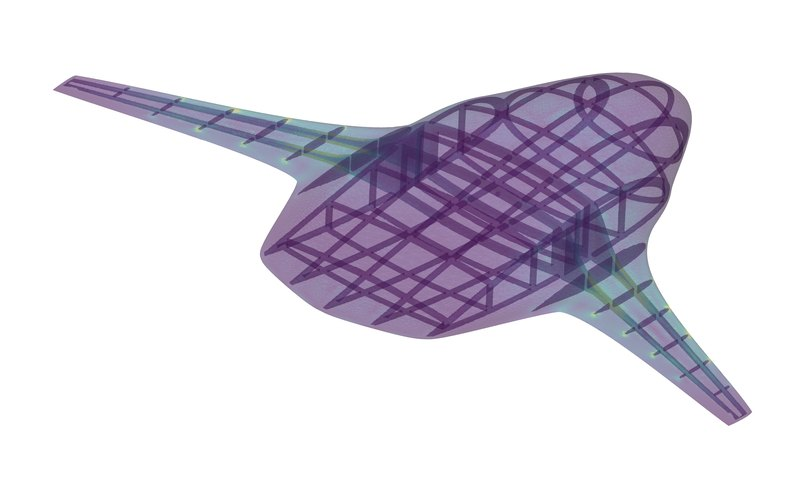

AIAA SciTech 2027

BlendedNet++ Structures: An Aerostructural Dataset and Inverse Design Benchmark for Blended Wing Body Aircraft
AIAA SciTech Forum, 2027 · Accepted
Blended wing body aircraft couple aerodynamic shape, structural layout, and internal volume. This dataset links them: aerodynamic surface forces predicted by BlendedNet++ load a parametric shell finite element model, giving 13,989 analyzed runs on 1,369 planforms with airframe mass, payload and fuel volumes, and component stresses. A surrogate ensemble predicts mass with a median error of 1.2% on held-out runs. In five mission cases, the lightest designs verified by finite element analysis are 3.5 to 44.0% lighter than the recorded reference design for that case. With nTop, I organized a design challenge built on this work for the ASME IDETC-CIE 2026 Student Hackathon.